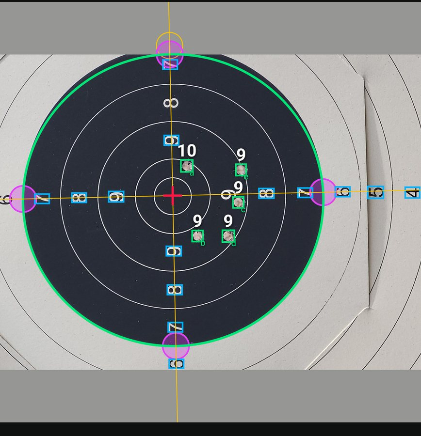
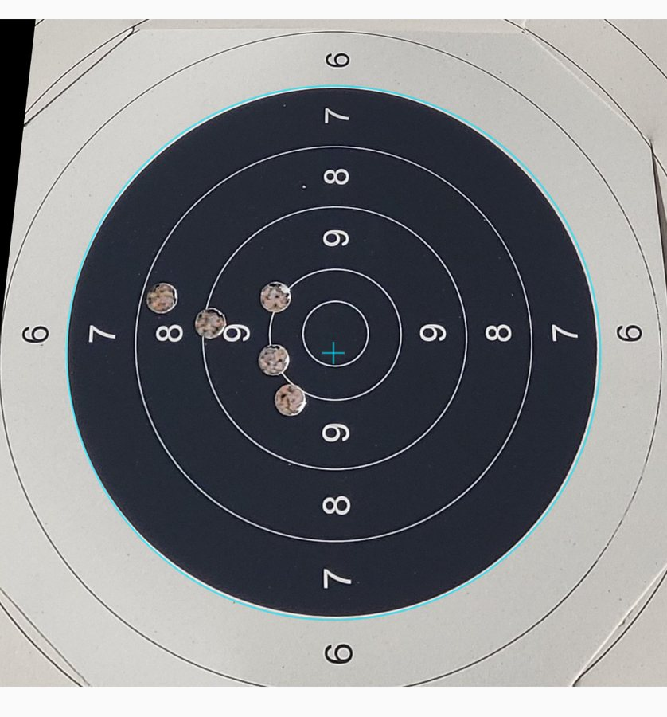
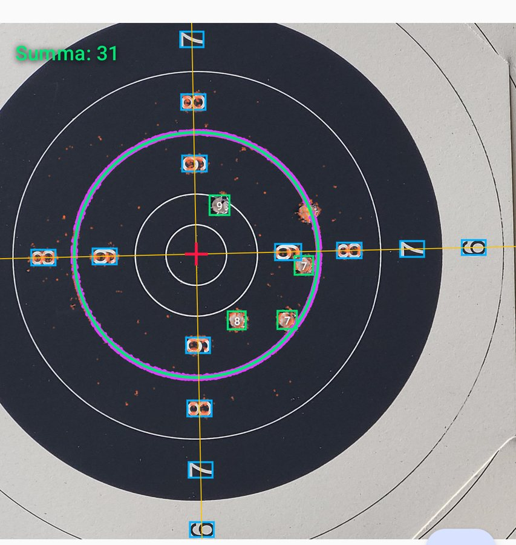

Mockup 5 — horizontal rows with the media on the left and tech tags. The project page splits into tabs: Overview · How it works · Gallery · Links.
Kotlin Multiplatform Active
Markera
Score a precision-shooting series from one phone photo of the target. Series are tagged by caliber, synced, grouped by day, and plotted on a zoomable target with mean and median impact markers.
1. Holes. An on-device YOLOv8 ONNX model boxes every hole.
2. Centre. OCR reads the printed ring digits; lines through the two rows intersect at the centre.
3. Scale. Four probe disks walk from the predicted 6/7 radius to the actual rim; an ellipse through them undoes the tilt.
4. Score. Each hole is rotated onto the ellipse axes, un-squashed, converted to millimetres and edge-gauged.



